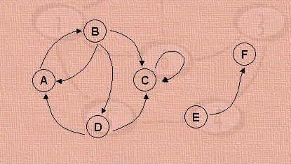

Um grafo é uma estrutura de dados bastante genérica, que engloba todas as estruturas estudadas anteriormente. É constituído por um conjunto de nós e um conjunto de arcos. Cada arco é especificado por um par de nós.
Como exemplo, tomemos o grafo formado pelo conjunto de nós N e pelo conjunto de arcos A:
N = { A, B, C, D, E, F }
A = { (A,B), (B,A), (B,C), (B,D), (C,C), (D,A), (D,C), (E,F) }
Este grafo pode ser representado pela figura abaixo:
 Os grafos podem ser utilizados para representar situações bastante diversas, como por exemplo:
- um mapa representando um conjunto de cidades ligadas por estradas: pode-se desejar saber qual o menor
caminho para ir de uma cidade a outra, entre outras coisas;
- um circuito eletrônico, onde os nós correspondem aos terminais dos dispositivos, e os arcos são os próprios
dispositivos: pode-se desejar saber se um terminal de um dispositivo está liga-do a outro, por exemplo;
- um conjunto de tarefas de um projeto, no qual os nós representam as tarefas e os arcos indi-cam as relações
de dependência entre elas (se uma determinada tarefa só pode iniciar depois que uma outra estiver terminada):
pode-se, por exemplo, desejar saber qual o prazo mínimo para execução de todo o projeto.